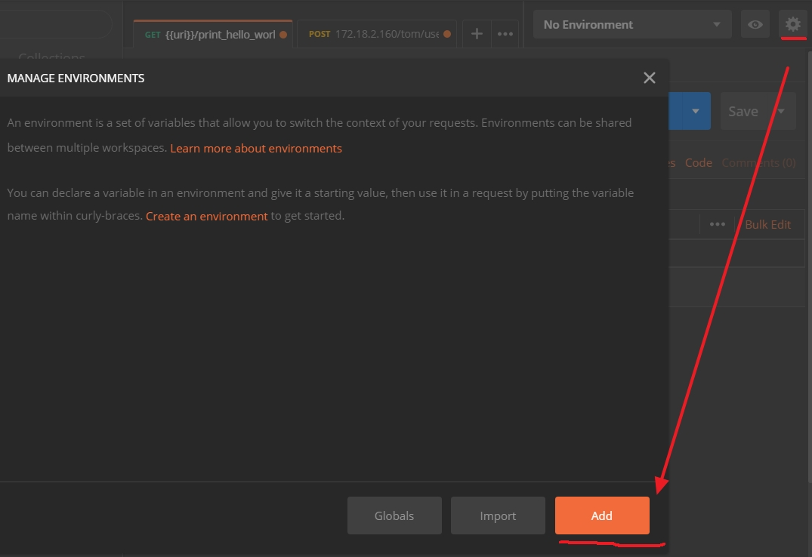
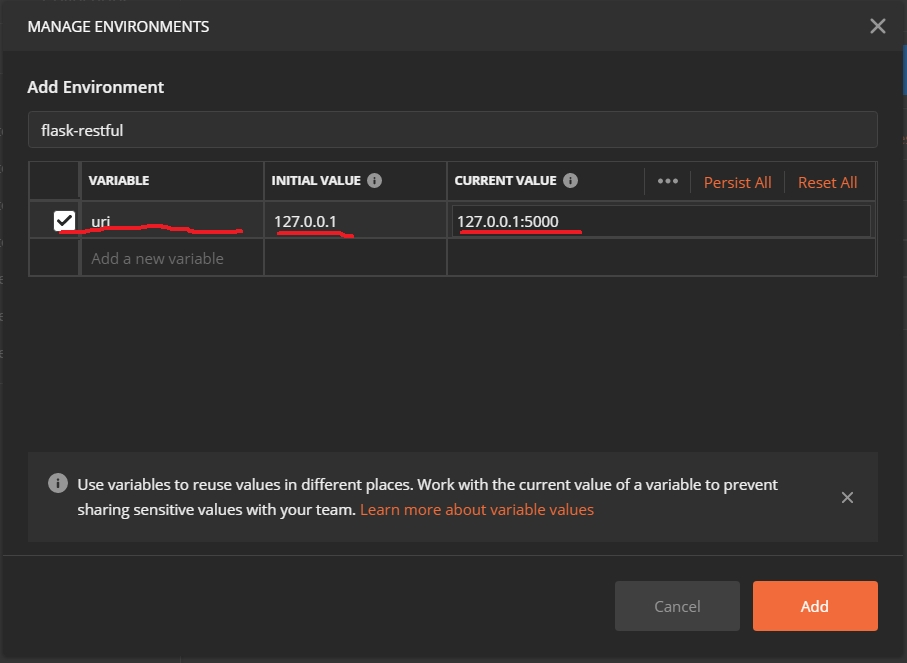
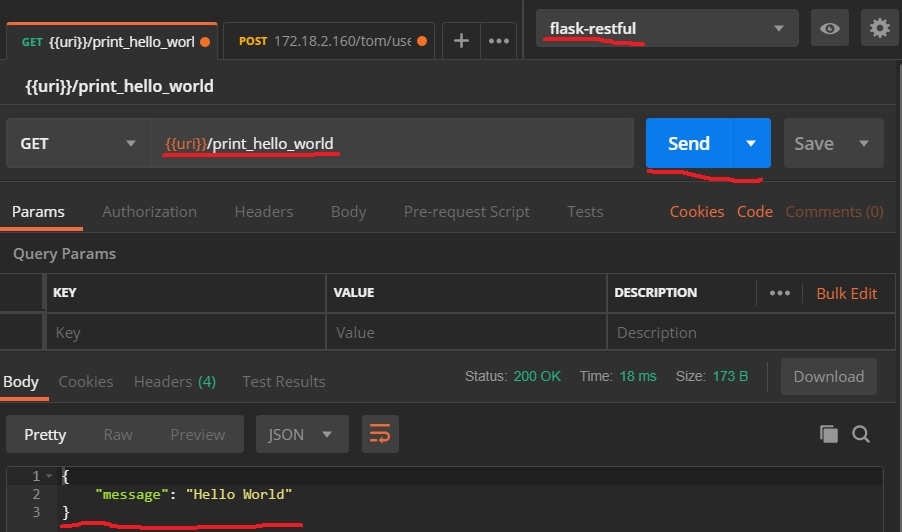

學習flask-restful起手式
flask-restful起手式
安裝flask-restful
要在虛擬python版本的環境安裝
1 | pip install flask-restful |
第一個resource
以下是基本的結構
1 | from flask import Flask |
以下是新增一個resource,而restful就是以資源為基礎，每一個項目都可以是一個資源，所以我們在添加一個resource在原來的內容中
1 | from flask import Flask |
第一個POSTMAN請求
安裝postman, 可以登入或是不登人(在畫面的最不方可以選擇不登入)
首先先建立目前的使用環境的通用變數,例如目前的測試server是127.0.0.1:5000,可以在postman先建立好，可以直接來使用在’Manage Environments’來設定
在按下’Add’後可以開始設定要用到的變數
在VARIABLE-> uri , INITIAL VALUE-> 120.0.0.1 CURRENT VALUE-> 127.0.0.1:5000接下來按下’Add’，便可接下來送post命令
選擇’flask-restful’在GET輸入’/print_hello_world’接下來按下’Send’的按鈕，可以在Body收到如上圖的’Hello world’,即完成第一個restfule api的功能
專案的基本結構
1 | │- app.py |
- app.py 主要是主程式和routes
- util.py 主要是常用的公用函數
- foo.py和bar.py 相關邏輯